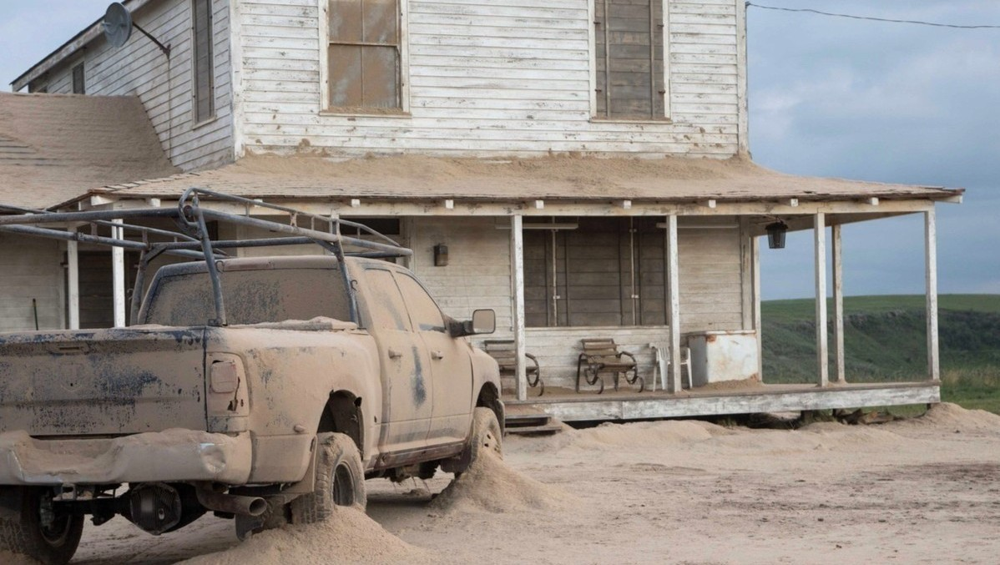
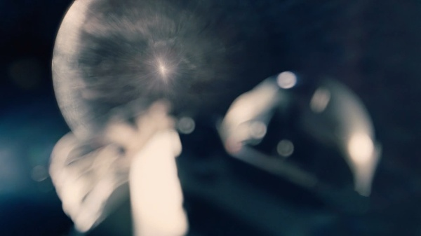

.jpg)


Земля умирает
Когда-то процветающая Земля превратилась в пыльный шар с истощёнными ресурсами, где человечество ведёт борьбу не за развитие, а за выживание. Купер, бывший пилот NASA, теперь фермер, пытается растить кукурузу и воспитывать своих детей, скрывая тоску по небу, по полётам, по цели. Его дочь Мёрф замечает странные явления в своей комнате — гравитационные аномалии, которые приводят их к секретной базе NASA. Там Куперу предлагают невозможное: оставить семью и отправиться через кротовую нору в другую галактику, чтобы найти новую планету и дать человечеству второй шанс. Он уходит — не потому что хочет, а потому что должен.
Через кротовую нору — к новым мирам
Миссия начинается. Купер и команда учёных покидают умирающую планету и проходят через кротовую нору, открывая врата к неизведанным мирам. Первый из них — планета, где каждая минута равна годам на Земле. Один неверный шаг, и они теряют десятилетия. Второй — мир льда, обмана и отчаяния, где доктор Манн, когда-то подававший надежды учёный, оказывается предателем, готовым пожертвовать кем угодно ради собственного спасения. Пространство сжимается, время становится врагом, и надежда тает с каждой неудачей. Но даже перед лицом смерти команда продолжает искать путь.

.jpg)
.jpg)
.jpg)
.jpg)

.jpg)

На краю бездны
Когда всё кажется потерянным, Купер принимает решение: пожертвовать собой, отделиться от корабля и нырнуть в сердце чёрной дыры — в невообразимо плотную, загадочную тьму, где исчезают не только свет и материя, но и законы привычной физики. Это не просто отчаянный манёвр — это шаг в неизвестность, ради тех, кто остался на Земле. И вдруг, вопреки логике, он не умирает, а попадает в многомерное пространство, где время — не прямая, а бесконечная библиотека. Там, внутри тессеракта, он находит способ связаться с Мёрф — ребёнком, которую он оставил, и которая теперь может спасти всех.
Связь сквозь время
Купер стучит изнутри через гравитацию, передавая Мёрф коды, данные, формулы. То, что казалось чудом в её детстве, обретает смысл: это был он. Мёрф расшифровывает сообщение, завершает уравнение, и с этим знанием человечество наконец получает шанс покинуть обречённую Землю. Купера тем временем вытаскивает из чёрной дыры неведомая сила. Он просыпается на космической станции, названной в честь дочери. Годы прошли, но она ждала. Они встречаются на короткий миг — дочь, ставшая легендой, и отец, вернувшийся из невозможного.


Новый горизонт
Мёрф умирает, а Купер снова уходит — на этот раз по собственной воле. Он крадёт корабль и отправляется к Бренд, которая одна строит новое поселение на другой планете. Он летит через звёзды, туда, где когда-то оборвалась их миссия, и где, возможно, начнётся всё сначала. Финальный аккорд — не конец, а новое начало, в котором есть всё: наука, вера, любовь и бесконечная дорога вперёд.
Основная мысль фильма "Интерстеллар" заключается в исследовании космоса и поиске человечеством новых
пригодных для жизни планет, а также в исследовании роли любви как силы, способной преодолевать пространство и время.
Фильм поднимает вопросы о месте человечества во Вселенной, о выживании, о семье и о взаимосвязи между наукой и эмоциями.
В целом, "Интерстеллар" - это сложный и многогранный фильм, который заставляет задуматься о важных вопросах, касающихся человечества, его места во Вселенной и о том, что делает нас людьми.